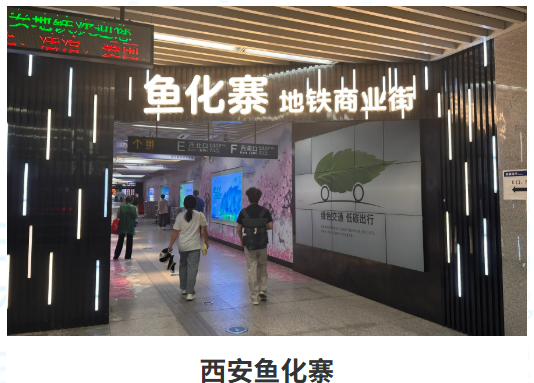
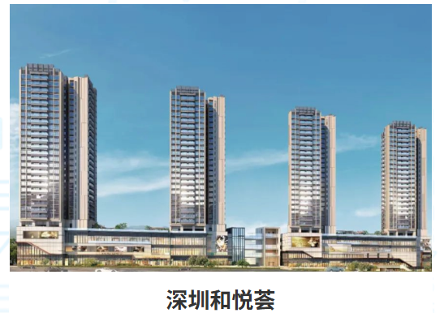

我们做什么
盈泽数科不是单纯的软件外包或工具销售商，而是围绕“管理先行、技术赋能”的服务伙伴。我们先帮助企业识别价值流、流程瓶颈和可量化收益场景，再把咨询方案转化为 AI 原生软件、智能体、数据平台和可持续运营机制。
当前业务围绕四个方向展开：企业 AI 化转型顾问服务、软件 3.0 AI 定制开发服务、实体商业国际出海业务、实体商业数智化运营。
ABOUT YINGZE
盈泽数科聚焦企业 AI 化转型、软件 3.0 定制开发、实体商业国际出海与实体商业数智化运营，致力于把 AI 能力、流程管理和真实商业场景连接起来。
盈泽数科不是单纯的软件外包或工具销售商，而是围绕“管理先行、技术赋能”的服务伙伴。我们先帮助企业识别价值流、流程瓶颈和可量化收益场景，再把咨询方案转化为 AI 原生软件、智能体、数据平台和可持续运营机制。
当前业务围绕四个方向展开：企业 AI 化转型顾问服务、软件 3.0 AI 定制开发服务、实体商业国际出海业务、实体商业数智化运营。
资料体系中沉淀的“精益管理 + 流程管理双驱 AI 化”是盈泽当前官网内容的核心表达：精益价值定方向，流程架构搭骨架，AI 技术赋动能，精益闭环保长效。
这套方法强调先优化、重构低效流程，再嵌入 AI 能力；通过成本、效率、质量、人效等指标量化转型效果，避免把 AI 变成叠加在旧流程上的额外负担。
结合资料中瑞维体系近 20 年实体商业运营经验、软硬件一体化数智平台、海外商业网络和服务商资源，盈泽官网内容将其转化为面向客户的服务能力表达。
在出海方向，重点呈现“商业经验 + AI 数智科技”的双基融合；在商业运营方向，重点呈现商业空间运维平台、商业运营平台和软硬件集成系统。
提供 AI 转型诊断、流程重构、成熟度评估、组织培训和常年顾问陪跑。
用自然语言描述业务目标，1-3 天生成可落地 Demo，并持续迭代为企业软件。
围绕 AI 市场报告、资源建联、本地化团队和生态资源对接提供出海经营服务。
打通商业空间、招商营运、设施设备和软硬件数据，让运营可监控、可复盘。

